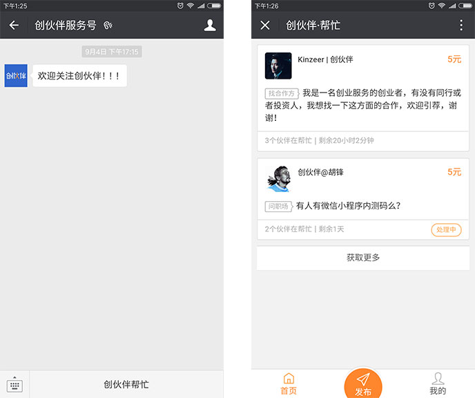
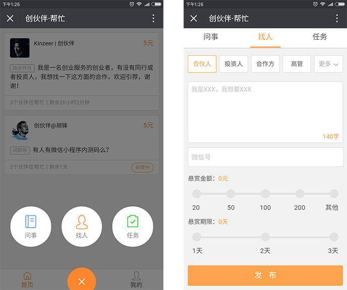
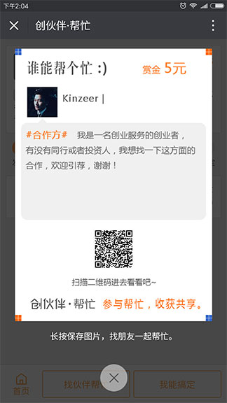
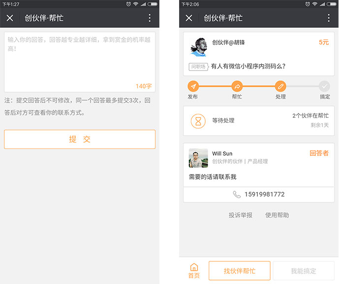

「创伙伴·帮忙」是「创伙伴」基于六度人脉理论开发的一款付费悬赏求助的轻应用，通过「创伙伴·帮忙」可以让每个人的人脉参与帮忙找人、问事以及完成任务，一条帮忙信息的完整信息链条参与者都可以分享发布者提供的赏金。
互相帮忙，一起领赏！
1.发布
Step1: 关注微信公众号“创伙伴服务号”，点击「创伙伴·帮忙」进入首页；

Step2: 点击“发布”，选择“找人”、“问事”或者“任务”；在发布详情页内选择对应标签，并输入你的求助详情，设置好悬赏金额和期限，点击发布；

Step3: 发布完成后你可将你的帮忙详情生成图片或直接将链接转发至你的微信朋友圈、微信群及其他社交软件里，让小伙伴们一起帮忙；

2.帮忙
通过「创伙伴·帮忙」首页或者其他帮忙链接进入帮忙详情，点击“找伙伴帮忙”，长按生成并保持图片并发布到自己的社交软件中，你的人脉圈中有人通过你的链接搞定求助信息，你也可以一起分享赏金；
3.搞定
通过「创伙伴·帮忙」首页或者其他帮忙链接进入帮忙详情点击“我能搞定”输入你的答案，等待发布者确认，如发布者确认通过你提交的信息，你将获得赏金；

4. Q&A
1、我发布的帮忙信息，过期没有人帮我搞定，我的赏金怎么办？
若发布的帮忙信息在规定期限内，没有人参与帮忙，赏金按原路退回；若已有人参与帮忙，系统扣取5％服务费后再原路退回。
2、赏金如何分配？
点击"找伙伴帮忙"并将帮忙详情分享链接给你身边的朋友，你的朋友点击了你的链接加入帮忙团，以此类推，直到后面的朋友搞定这条帮忙信息，且答案被发布者采纳，则该完整信息链条的"帮忙团"成员平分45%的赏金，最终搞定者分享45%赏金。
如你一个人未经过其他人传播直接搞定发布者的帮忙信息，你讲直接获得90%的赏金。
平台将收取赏金的10%作为服务费。
3、参与帮忙就一定可以拿到赏金吗？
点击"找伙伴帮忙"后，一定要分享你的专属链接（图片）给朋友，你的朋友链通过点击你的专属链接并搞定帮忙信息，你才可以参与赏金分成。如果你的关系链没有人搞定帮忙信息，或者发布者没有采纳你的关系链提交的答案，你将拿不到赏金。
4、接单搞定后就一定能拿到赏金吗？
点击“我能搞定”并完整提交的答案后，只有答案被发布者采纳后，你才能获得赏金分成，若未被采纳，则不能获得赏金。
5、如果我多次提交答案，发布者一直拒绝从不采纳，怎么办？
点击“我能搞定”并完整提交的答案后，只有答案被发布者采纳后，你才能获得赏金分成，若未被采纳，则不能获得赏金。
如有其他问题，关注微信公众号“创伙伴服务号”（微信号：chbPlus）或者添加创伙伴个人微信：XXXXX留言，即可与创哥进行交流。